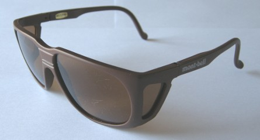
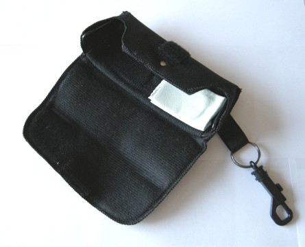

私のお気に入り
釣り道具 モンベル フィッシング用偏光サングラス
長年使ってきた山本光学製、SPALDINGブランドの偏光サングラスが、つるが折れて壊れてしまった。レンズは大丈夫だったのでそれに合うフレームを眼鏡屋さんで作ってもらおうかとよく見てみると、レンズにも細かな傷がたくさん付いていて、かなりくたびれていることがわかった。じゃぁ思い切って新調するかとインターネットでいろいろ調べてみたが、なかなか気に入ったものが無い。海外のサイトも探したのだが、これはと思うものは本体の価格もけっこうするし、送料を考えるととても割高な買い物になってしまう。
そんなとき、モンベル http://www.montbell.jp/ のサイトで見つけたのがこの偏光グラスであった。価格もお手頃だったので（実売価格で4000円しなかったと思う）さっそく馴染みの登山用品店で、色はブラウンを選んで注文したところ、在庫があるということなのですぐに買いに行った。

買って使ってみて、大正解だった。この偏光グラスの良いところは、
・レンズが大きく、視界が広い。現在の流行は、レンズが小さめのデザインなのかもしれないが、あれでは視界が狭くなってしまうと思う
・レンズ越しの視野が明るく、シャープである。暗い川でも水中がしっかりと見える
・レンズの隙間からの光も両サイドの遮光レンズがしっかり防いでくれる
・重量が軽く、顔にフィットする
・付属のハードケースがとても丈夫に作ってあり、他の荷物に潰されてメガネを壊す恐れが無い。昔レイバンの偏光グラスを付属のハードケースに入れておいたところ、荷物の中で圧迫されてレンズが割れたことがあったので、この頑丈なケースはとてもありがたい。また、このケースにはスプリングで開閉するクリップが付いていて便利である。ケース単体で売っても良さそうな出来である。
・なんと言っても価格が安い。この性能でこの価格なら非常にコストパフォーマンスが良いと思う。一つ目を買ってすぐに二つ目を注文し、現在二つ持っている。

この価格で文句を言ってもばちあたりだが、しいて短所を挙げてみると
・価格相応の質感、ややチープな感じがする
・少々無骨なデザイン。だがこれは、性能が十分なので、質実剛健ととらえておこう
こんなに良い製品だと思うが、2009年の春にはカタログから落ちてしまい、販売が終了したようである。メーカーに再販希望のメールを出そうかと思うくらい気に入っているので、二つ買っておいて良かったとつくづく思う。
今度、ニュージーランド南島の西海岸を訪れたら、シビアなサイトフィッシングの場面で、この偏光グラスがどのくらい活躍してくれるのか、今から楽しみである。
などと書いておいて、偏光グラスをかけないで釣っている私の叔父が、さんざん私の攻めたポイントに後から来て岩魚をバシバシ釣り上げている事実には思わず目をつぶってしまう作者でした。
私のお気に入り 目次へ
サイトマップ
ホームへ
お問い合わせ